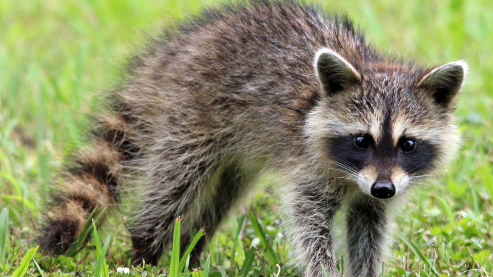

zone géographique : le sud du Canada, l'Amérique du Nord jusqu'au Mexique
Lieu de vie: marécage, forêts,
alimentation: carnivore
Longévité : 5 ans
Famille: Procyonidés
Taille : 0,50 à 0,70 m (longueur de la queue 0,30 m)
mode de vie : nocturne
comportement : C'est un animal intelligent et curieux qui s'autorise toutes les audaces. En été et en automne, il constitue une réserve de graisse dans laquelle il puisera en hiver. Il n'hiberne pas mais passe par des périodes de torpeur.